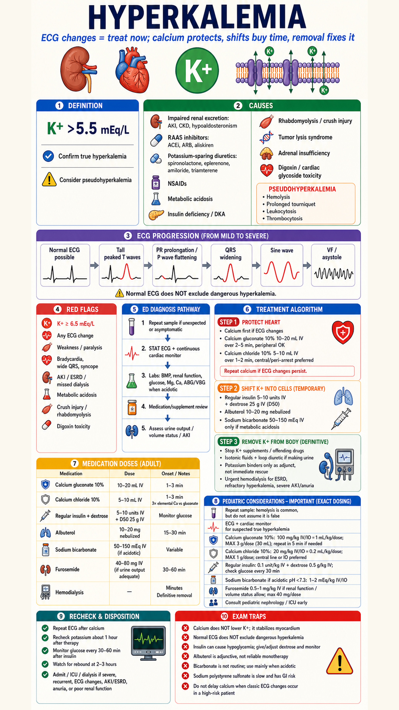

Core ED framing
ECG changes or severe confirmed hyperkalemia require immediate therapy. Calcium protects myocardium; shifting therapies buy time; removal prevents rebound.
Do not miss
Normal ECG is not reassuring enough in high-risk severe hyperkalemia. Repeat unexpected values, but do not delay calcium when classic ECG toxicity is present.
Monitoring
Repeat ECG after calcium, recheck K around 1 hour and serially, and monitor glucose closely for 3-6 hours after insulin-dextrose.